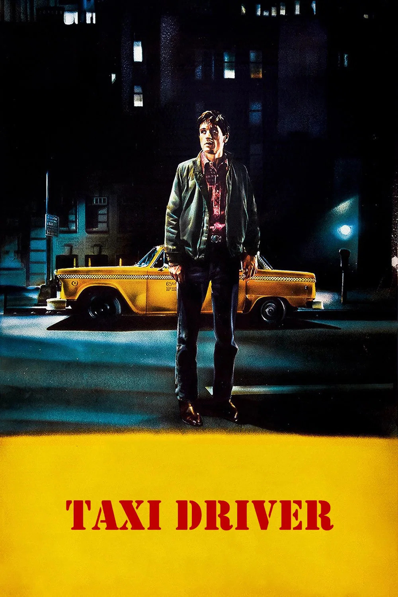
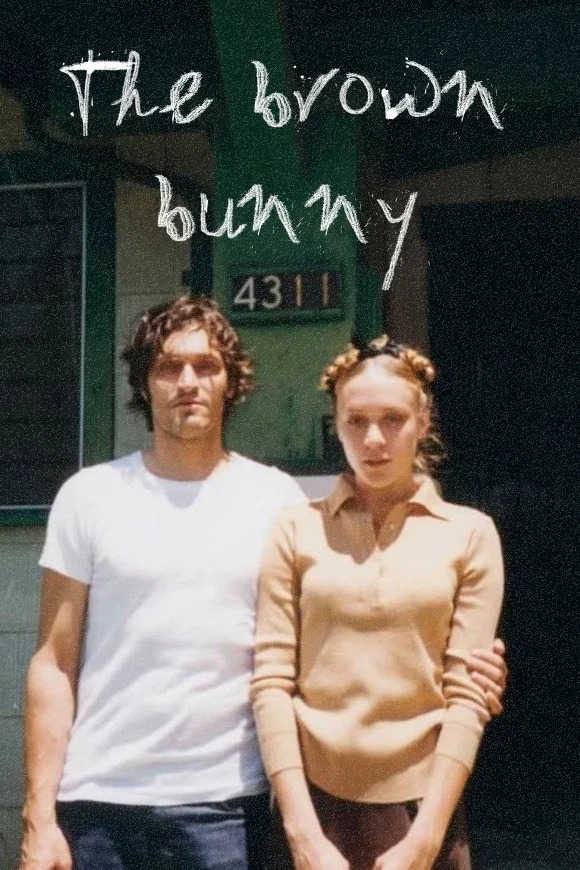
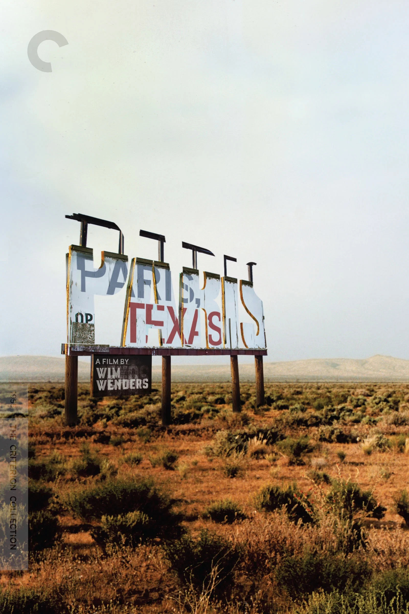
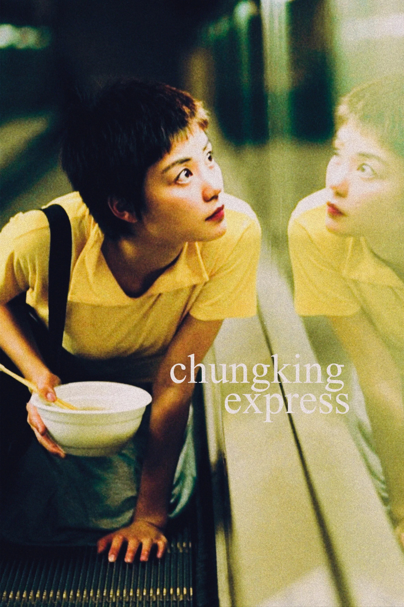
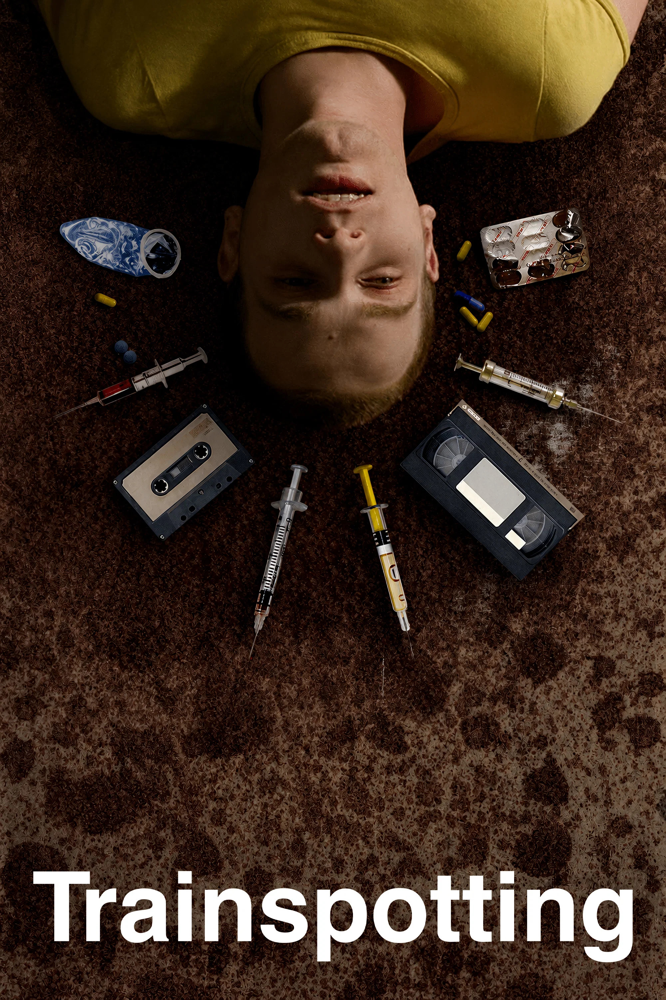
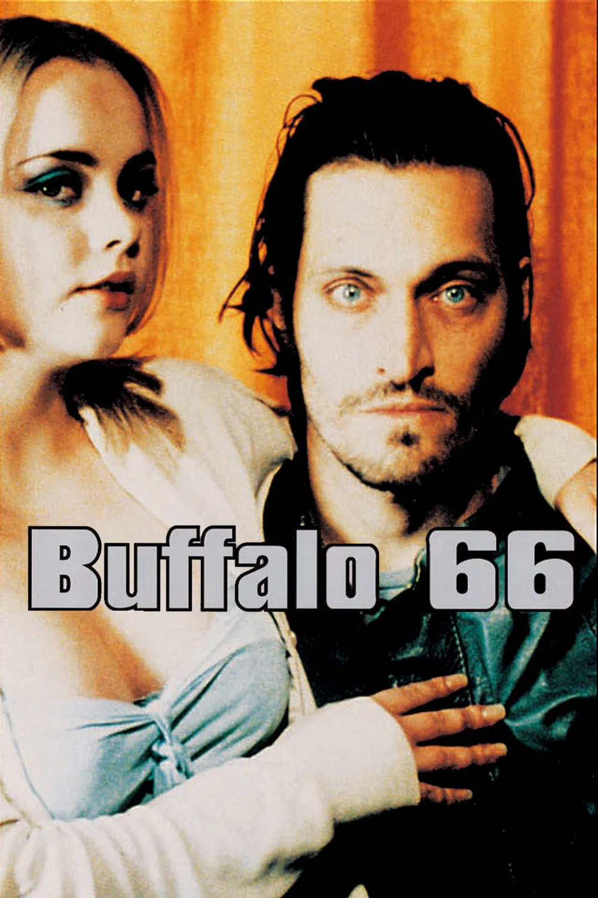
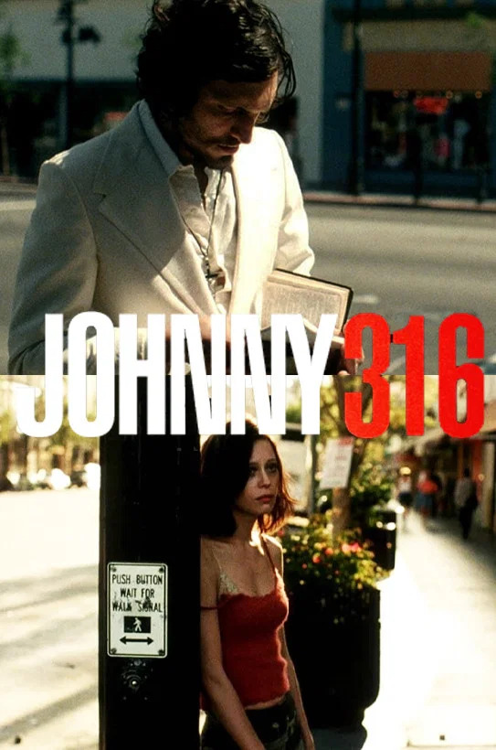
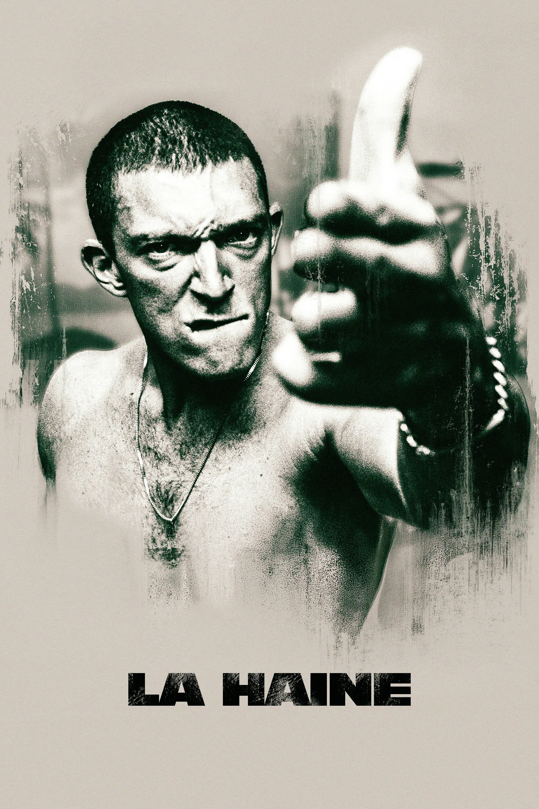

MOVIEBOXD es tu diario de cine: valora, comenta y arma listas con tus películas favoritas.
Peliculas en tu lista

Taxi Driver
The Brown Bunny
Paris, Texas
Chungking Express
Trainspotting
Buffalo 66
Johnny 316
La HaineMOVIEBOXD en números
1,204,600+
Películas registradas
340,900+
Usuarios activos
58,300+
Listas creadas por la comunidad